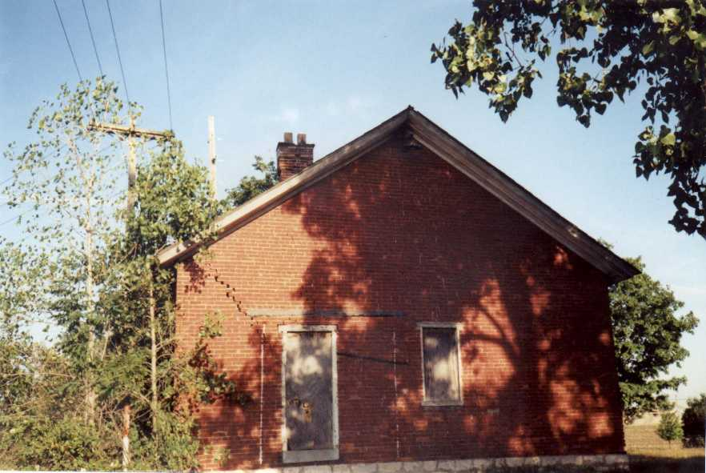
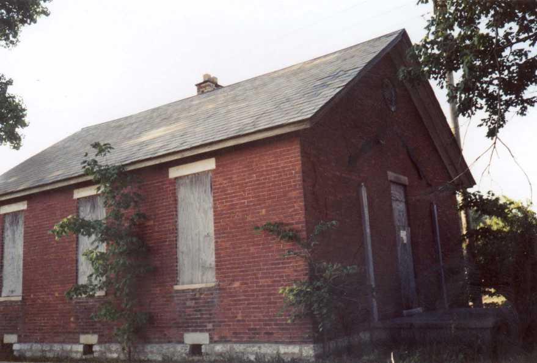
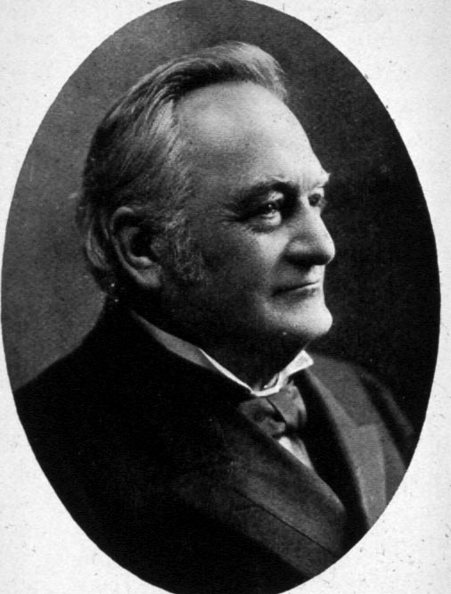
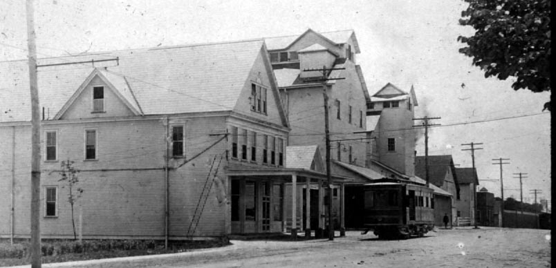
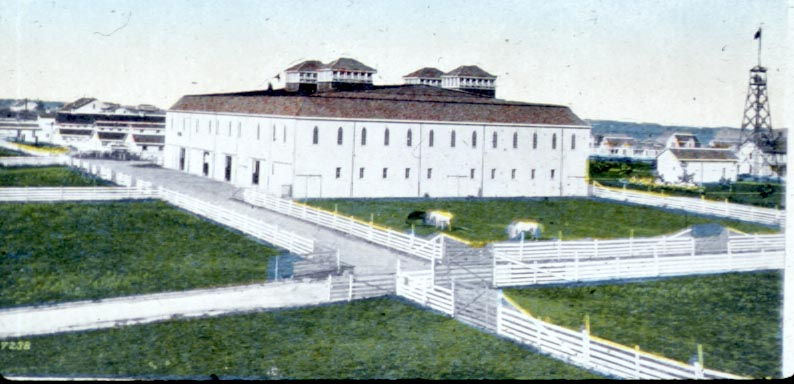
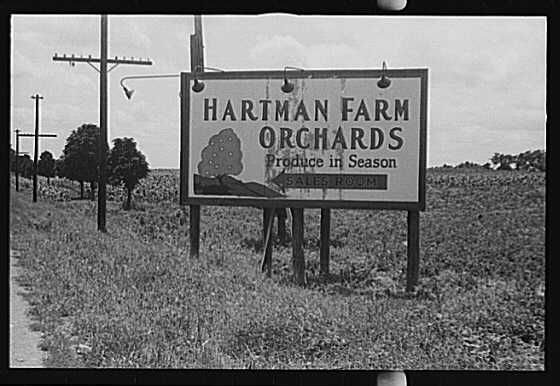
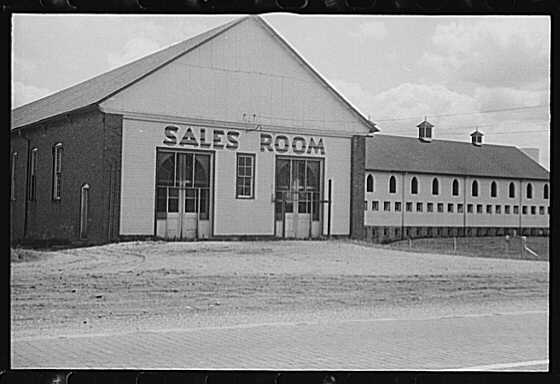
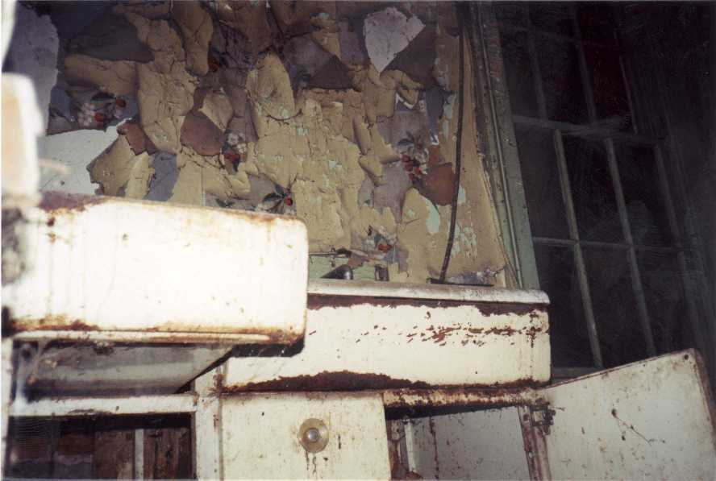
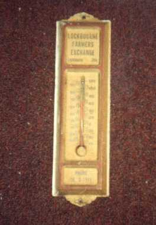
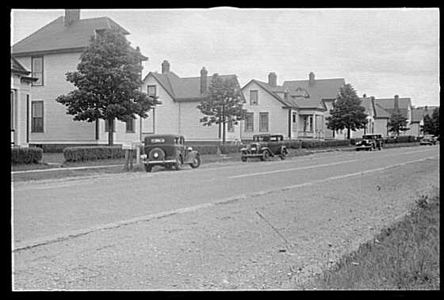

In mid-July my friend Hoss and I drove the few minutes from my house to the abandoned schoolhouse on the corner of SR 23 and Rathmell Road, otherwise known as the Hartman Farm Schoolhouse. This building was in use as a school from 1897 until roughly 1910, after which it was used as a kind of town hall for some time. I've driven by it for years but never took the time to look inside; I dont know of anybody else who has, either.

The school served the families of the workers on what was once the largest functioning farm in the United States: the Hartman Farm. Around the turn of the century most of the area that is now the far south end of Columbus belonged to Dr. Samuel B. Hartman, who became rich by selling a patent medicine called Peruna. Peruna contained a lot of liquor but maintained its claim as a medicine, which helped temperance advocates feel better about themselves when they became inebriated from the stuff.

Dr. Samuel B. Hartman
This building was once a schoolhouse in the Hamilton Township district--essentially a one-room schoolhouse serving all grades. It's often thought of as being Dr. Hartman's farm school, and it may have been, but it was built sometime around 1880 and the farm wasn't established until the early 1900s. It appears on maps from 1895 and 1910, which shows that it was in operation during the heydays of the "largest functioning farm in the world." But it wasn't the only school in Hamilton Township. The others included:
 Sawyer School, 1870-1923
Sawyer School, 1870-1923
Morehead School, 1856-1924
Shadeville School, 1854-1954
Rathmell School, 1866-1915 (Corner of Lockbourne Road and SR 317; still standing.)
Rees School, 1889-1919 (NE corner of Bixby and Rohr Roads; demolished about 2000.)
Riley School, 1872-1919 (Parsons Avenue and Obetz Road.)
Lockbourne School, built 1894 (Hamilton's first high school; still standing as the Masonic Lodge.)
Miner High School, 1916-1939 (Hamilton's first full-size high school; converted into apartments.)
Hamilton Township High School, built 1939 (Still in use, and where I attended all four years; reported to be haunted by a worker who hung himself during construction.)




Farm scenes from 1940
After the farm shut down in the 1940s, legend has it that the schoolhouse was given to a loyal farm employee, who lived there with his family until the mid-1960s.
Although I've never heard anyone say the place is haunted, it is still pretty creepy. We went in through the back door, which was boarded over but not too hard to break through. In the back room we encountered a broken-down sink standing in the corner and a lot of peeled-up paint and carpeting on the floor.

The place turned out to be bigger than we had imagined--six rooms, plus a foyer at the front door. Three bedroom-type rooms, a hallway, and a main room. We found no sign that the place had ever been a schoolhouse, not even in the crawlspace underneath, but we did find a thermometer in the frame of one of the back windows, advertising a feed store in Lockbourne and giving their five-digit phone number. We also found some women's magazines from the 1960s, along with some old-fashioned beer cans and liquor bottles. Bums probably used to stop off here before they boarded it up.

The picture below was sent to me and is probably 23 South in 1940. It's hard to believe that a major highway like Route 23 once resembled a residential street.

According to Early History of Hamilton Township Schools: Franklin County, Ohio, when it comes to the brick schoolhouse on the corner of US 23 and Rathmell Road, "Dr. Hartman, having purchased the land, was first mentioned in the (school board) minutes in 1904 when he asked permission to grade and improve the grounds...."
"In 1926, the school was closed and pupils transported to Obetz and Shadeville. In 1930, the board ordered the sale of the building at public auction. It is now owned by the Hartman estate, whose heirs live in California."
Special thanks to Linda for sending me some solid factual information about the history of the Hartman Schoolhouse. If you have anything else, please feel free to get in touch and tell me about it.
The Hartman Hotel
Back
forgottenohio@yahoo.com